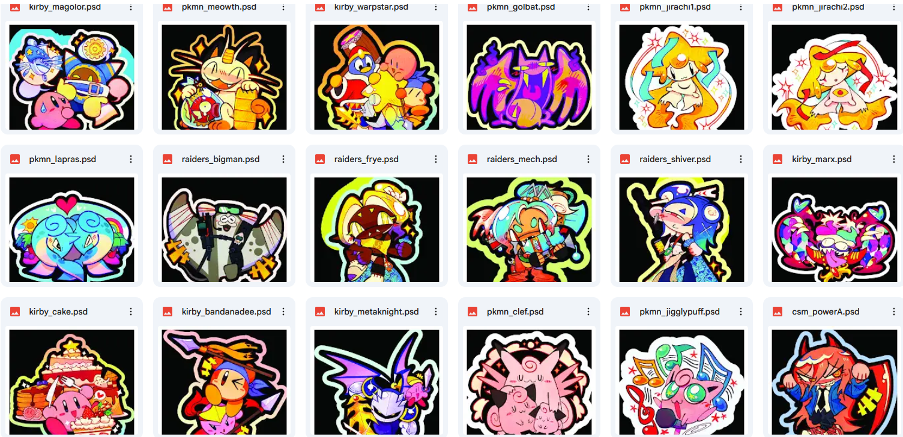

[2026/06/30]
Juni 2026

Hello! How is everyone doing? I’m doing my best, personally. A lot of things happened this month, which means I’ve got a lot to write about.
First and foremost: I quit my job! It turns out that if you keep taking your anger at other employees out on me, treating me like shit, having me train new hires, and
still paying me less than them for doing the same amount of work, I will end up handing you a resignation letter with no explanation. It’s a tale as old as time; the moment I handed that thing in, my ex-boss frantically started apologizing, making up stupid excuses for why he kept singling me out, complimenting my hard work (why now of all times?), and trying (and failing) to justify why I was earning less than everyone else. On my last day, he had the nerve to ask me to “stay for a few more weeks”, even though I handed in a resignation letter that gave him a few weeks to find someone else… Honestly, he was lucky that I didn’t immediately quit on the spot. Aidan talked me into handing in a formal resignation letter (and I’m still grateful to him for it), and I figured I should give my coworkers grace by not screwing up their schedules.
Even though I was, to say the least, unhappy working there, I wasn’t really in a position to quit. The job market is bad everywhere you go, and although it was basically the bare minimum, I was still being paid my wages (somewhat) on time. Still, when I handed in that letter, I felt so much relief wash over me. I do not regret leaving my now former job at all.
What’s the next move for me? I dunno! Obviously, I need to look for a new job, but it’s impossible given the current global economic recession. It’s not like I haven’t been trying either. Interviews lead nowhere, and I’m pretty sure my resume has been eaten up by hundreds of AI sorters now. It’s a little hard not to blame myself even though we’re in an era where scams are being disguised as fucking job offers. Well, I’m doing the best I can. That’s all I can care about.
This newfound freedom I have is a little terrifying. It feels like I’m wasting my time when I’m not on the clock earning money (Fuck capitalism for making me internalize this). I’m a little bit scared of spending money right now. I’ve been meaning to move out for a while, and not being able to save money for that… well… that’s not good! I hate dooming so much about the future, but I can’t help it. It feels a lot like the younger generation got the short end of the stick. I hear stories all the time about how American boomers could work fulltime folding clothes at a clothing store, and that salary was somehow enough for them to live independently, afford a car, pay the bills, shit like that. My friends have older relatives that fucked around in their 20s and decided “Okay, that’s enough” and became a stock trader or investment banker or whatever in their 30s because there was no barrier to entry at the time. Holy shit, that’s so unfair for us. You really could live life like that back then, huh? Good fucking luck trying to get an entry-level job with a comfortable living wage now. College degrees don’t hold prestige anymore, now that they’re a requirement for minimum wage jobs; interviews happen once every hundred applications; job offers happen once every thousand interviews. Can you really blame me for feeling so defeated right now?
But I don’t mean to be all doom and gloom. The fact that the job market is so fucking terrible now just, incredibly, circles back into being a good thing: Getting a regular 9-to-5 is so difficult that you have the same odds of trying to turn your passions and ideas into successful projects and careers, so just do the latter at this point. This is how I’m coping with life right now; I’m putting more of my energy and effort into drawing, writing, coding… stuff I like. I often feel childish for doing this (because society deems you useless if you don’t produce economic surplus value, something like that), but I feel like I’m working towards something that’s actually making me happy, even if the things that make me happy are trivial.
I’m still hard at work making a lot of stickers! I finally finished manufacturing May’s batch, and they’re now up in my shop. It consists of Chainsaw Man, Dokodemo and a few Gachiakuta characters. I’ll get to manufacturing June’s batch ASAP; so far, I’ve done some Pokémon, Splatoon Raiders, and Kirby characters. I’m gonna try to speedrun and get some Deltarune stickers out by the end of July (no promises).

I’m still reeling from how insane Chapter 5’s Weird Route is. I still don’t have the game in my Steam library; so far, I’ve just been watching youtube gameplay of it. I’m so close to buying it myself though, because YouTube gamers were all born yesterday and don’t know how to fucking play video games properly.
Edit: Aidan bought Deltarune for me, and that's what I've been playing for a few days now. It's quite fun; I want to try to defeat all the secret bosses! I also made some fanart recently for Chapter 5's new release.

I’m also gonna use the new time on my hands (as long as I'm not being a sad sack of potatoes over unemployment) to reformat the shrine pages and write up some tutorials, as well as knock out a few games in my backlog (Aidan bought me the Portal and System Shock games). I finally finished Disco Elysium, and it led me down the bottomless internet pit of communism and leftist infighting for a small amount of time. That was fun. I’ve been playing Fields of Mistria lately too now that my interest in Stardew finally sizzled out after 180 hours of gameplay, and now I’m just waiting for the game to be out of early access — really happy for the dev team!!
I sometimes wonder how difficult it is to make a game. I would like to try one day, but right now I have my hands full with other things. I want to add that to my bucket list. I’ll probably have the skills to make a game sometime in the future if I really put my mind to it. I taught myself how to draw, then how to code, so I’m (delusionally) convinced that I can teach myself to do anything at this point.
I’ve also been thinking a lot about returning to social media. It’s something I’ve been struggling with for a little while, but posting my drawings online has been a monumental task for me, despite being something I used to enjoy (and kind of threw my life into in my teenage years). It’s hard for me even to update my art gallery tab — I usually just leave that task for the end of the year. I don’t think I can promise anything anymore because I still don’t like social media as it is right now. I hate how much it absorbs my attention (This is completely my fault, but we all know social media is designed to be as addicting as possible, so really it’s more like 10% my fault), and many social media sites are so anti-art that I hate how much I depend on them for money/exposure/etc. Why the fuck is there an “edit with AI” button on every image posted on Twitter? I wish there was a massively popular modern-day Deviantart, but eh. The golden age of the internet really is gone… At the very least, we have a community of indie webmasters here. That’s at the VERY very least. The situation feels dire.
This combination of quitting my job, going on autopilot when I draw, and thinking about late-stage capitalism all the time has led me to reflect on my life choices, who I am, what could be better, and what I could have done better. I’m not sure what triggers this or how to prevent it. Perhaps a fear of failure? I often fantasize about dropping my online presence completely and becoming some sort of sheep farmer (as one does), but I genuinely think God has cursed me to be a niche internet microcelebrity artist.
I’ve become a lot more irritable because there are so many things in life that are beyond my control. I constantly wish things were better, yet I can’t pinpoint exactly what I want to improve. Lately, I feel like I’ve been complaining a lot to my friends about unimportant things. I wonder if they get tired of that. I just kind of say stuff to say stuff for the sake of saying it. I even feel that way writing this blog post.
At the end of the day, I have a good life, I’ll try to learn how to roll with the punches better. Things could always be worse.
I thought I wrote something, but it feels like I’ve written a whole bunch of nothing. Does anyone feel the same way I do? Can anyone sympathize with my feelings? I’m going back to playing Nubby’s Number Factory. Peace and love and have a good July.